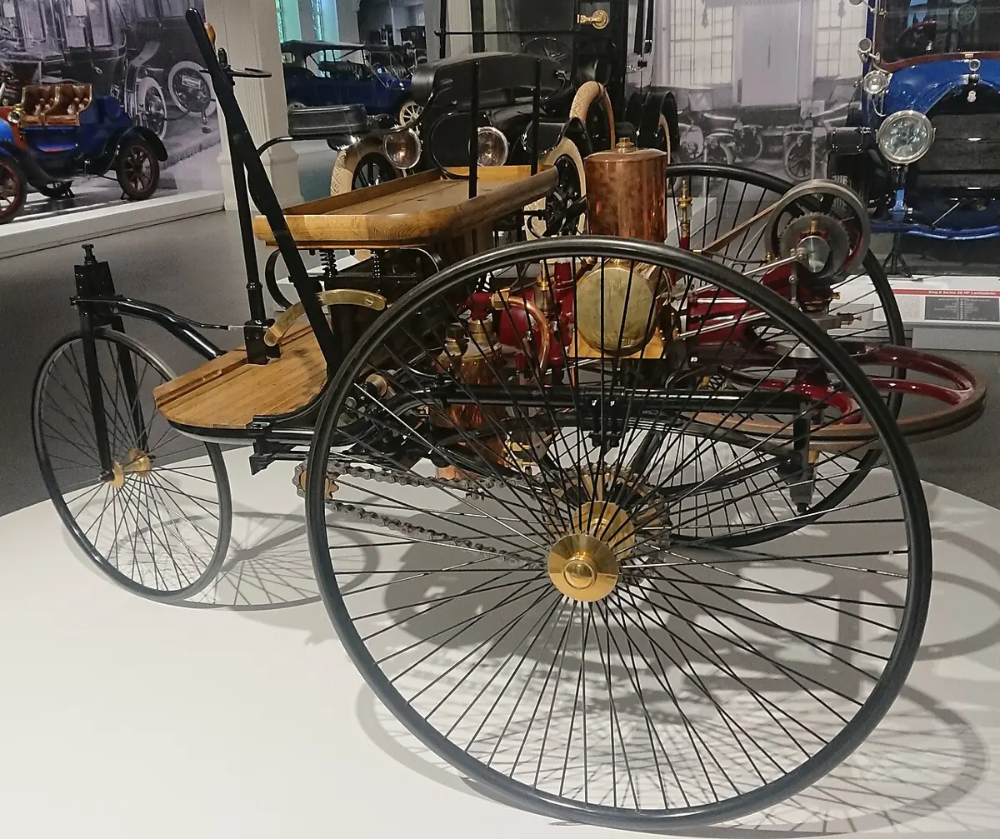

Par Motor › Historia del motor › Mercedes-Benz
Historia del motorMercedes-Benz: la historia completa

Este es el Mercedes-Benz 300 SL. Uno de los coches más deseados de la historia.
Pero la marca que lo fabricó tiene un récord que nadie le puede quitar: inventó el automóvil.
Y su nombre, Mercedes, era el de una niña de diez años.
Esta es la historia completa de Mercedes-Benz.
1886 · El primer automóvil
En enero de 1886, el ingeniero Karl Benz patenta en Alemania un vehículo de tres ruedas con motor de gasolina. Es considerado el primer automóvil de la historia.

El Benz Patent-Motorwagen.
Pero el primer gran viaje en coche lo hace su mujer, Bertha Benz. En 1888 coge el coche, sin avisar a su marido, y recorre más de cien kilómetros con sus dos hijos.
Por el camino se queda sin combustible y lo compra… en una farmacia. Aquella farmacia es considerada la primera gasolinera de la historia.
Mientras tanto, a unos cien kilómetros, Gottlieb Daimler y Wilhelm Maybach construyen su propio vehículo a motor. Dos empresas rivales que acabarán siendo una sola.
1901 · Emil jellinek
En 1901, un rico empresario austriaco, Emil Jellinek, encarga a Daimler un coche de carreras.
Pone una condición: que lleve el nombre de su hija, Mercedes. El coche gana carreras y el nombre se queda para siempre.
En 1926 se fusionan las empresas de Daimler y de Benz. Nace Daimler-Benz, y sus coches se llamarán Mercedes-Benz.
Su estrella de tres puntas representa los motores Daimler por tierra, por mar y por aire.
Flechas de plata
En los años treinta, sus coches de carreras arrasan. Los llaman las Flechas de Plata.
Según la leyenda, en 1934 un coche pesaba un kilo de más. Lijaron la pintura blanca, quedó el aluminio a la vista… y nació el color plateado.
Durante la Segunda Guerra Mundial, la empresa fabrica para el ejército y usa trabajadores forzados. Hoy lo reconoce públicamente.
Tras la guerra, en 1954, presenta el 300 SL, con sus famosas puertas de alas de gaviota.
Pero en 1955 llega la peor tragedia del automovilismo: en las 24 Horas de Le Mans, un Mercedes vuela hacia el público. Mueren más de ochenta personas, y la marca abandona las carreras durante décadas.
Obsesión: la seguridad
Desde entonces, Mercedes se obsesiona con algo: la seguridad.
Su ingeniero Béla Barényi inventa la zona de deformación programada: la parte delantera y trasera se aplastan para proteger el habitáculo. Llega a la calle en 1959.
En 1978, la Clase S es de los primeros coches de serie con frenos ABS, desarrollados con Bosch.
Y en 1981 llega el airbag para el conductor.
En 1997, el nuevo Clase A vuelca en una prueba de esquiva en Suecia, la famosa prueba del alce. Mercedes reacciona poniendo control de estabilidad de serie. Y acaba extendiéndose a todos los coches.
1998 · Daimlerchrysler
En 1998 se fusiona con la estadounidense Chrysler. Iba a ser la boda del siglo.
Fue un fracaso: en 2007 se separan, después de perder miles de millones.
Hoy Mercedes fabrica desde el Clase G hasta los deportivos AMG y los lujosos Maybach, que recuperan el apellido de aquel ingeniero de 1886.
Y en Fórmula 1 vuelve por la puerta grande: ocho títulos de constructores seguidos, de 2014 a 2021, seis de ellos con Lewis Hamilton al volante.
Ahora apuesta por el coche eléctrico con su gama EQ.
Del motorwagen a hoy
Así que la marca que inventó el automóvil, y que debe su nombre a una niña, sigue siendo, casi ciento cuarenta años después, una de las más prestigiosas del mundo.
¿El 300 SL, el Clase G o la Clase S?
Más curiosidades de Mercedes-Benz
¿Cuánto vale hoy un Mercedes-Benz?
Consulta el precio justo de segunda mano de cualquier modelo, año por año, con el tasador gratis de Par Motor.
Ver precios por modelo →